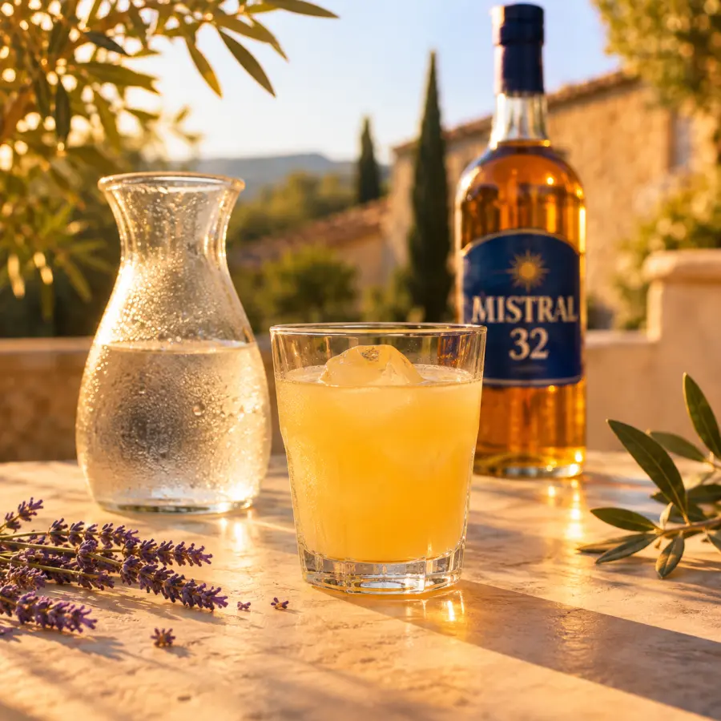

Donnez votre avis
Donnez votre avis
Le goût des plantes
32 plantes et épices, réunies autour de l'anis étoilé et de la réglisse.
Mistral 32, c’est une histoire simple : le goût du Sud, la richesse des plantes et le plaisir de se retrouver autour d’un apéro


NOS RACINES
Tout commence à Aix-en-Provence, sur les bancs de l'IUT. Trois étudiants : un Marseillais, un Avignonnais et un Auvergnat. Trois origines, trois caractères, mais un point commun : un certain talent pour l'apéro.
Un soir, autour de quelques bières, entre deux discussions sur les partiels qu'ils n'avaient pas révisés, une idée surgit : « Et si on créait notre propre pastis ? »
Une idée brillante ? Peut-être. Une idée raisonnable ? Totalement surtout après trois pintes.
Mais contrairement à leurs bonnes résolutions de début de semestre, celle-ci a tenu.
C'est comme ça qu'est né Mistral 32 : un pastis imaginé par trois étudiants, inspiré du Sud et créé pour les bons moments et décompresser après les 8h-18h.
Comme quoi, les meilleures idées ne naissent pas toujours en cours.
NOTRE ESPRIT
32 plantes et épices, réunies autour de l'anis étoilé et de la réglisse.
Un pastis distillé à Marseille, fidèle aux saveurs et à la lumière du Sud.
Une table, des amis, un peu de temps : les choses simples font les bons moments.
Original, Citron Bio ou Réserve : retrouvez l'esprit Mistral 32 dans nos trois pastis.
Découvrir nos pastis